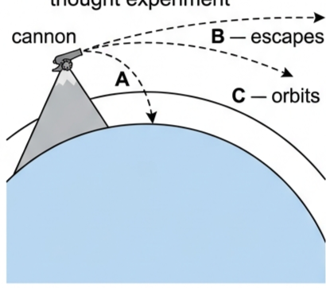
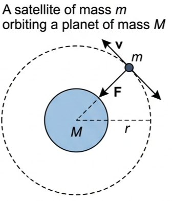
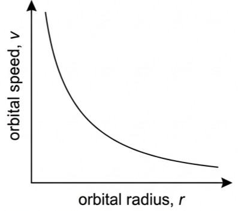
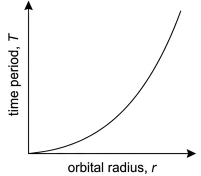
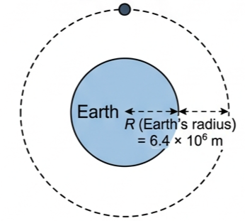
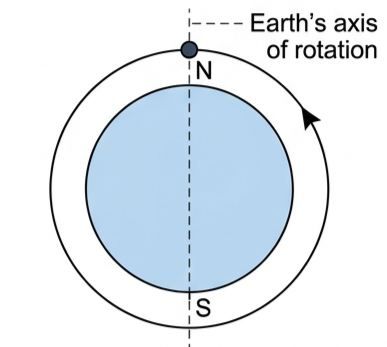
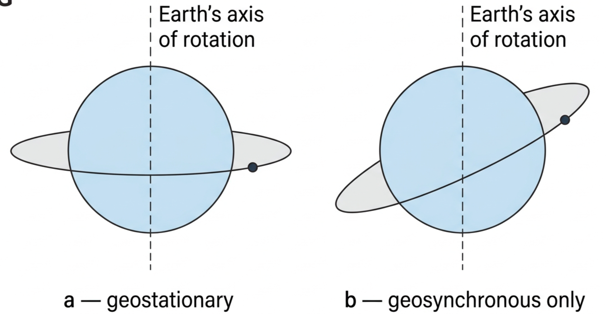

🎯 Hook – Newton's cannon on a mountain
Newton imagined a cannon on a very tall mountain, firing cannonballs horizontally, faster and faster. A slow ball falls in a parabola and lands close by (path A). A faster ball travels further before landing (still path A, just further along). Fire it fast enough and the ball never lands at all — the ground curves away beneath it exactly as fast as the ball falls (path C). An orbiting satellite is a cannonball that is still falling — it just never hits anything. Fire it faster still and it escapes the Earth altogether (path B).

🛰️ Gravity as the centripetal force
A satellite is an object that orbits a much larger mass. Satellites can be natural (the Moon, the planets themselves) or artificial (communications, weather, GPS). Its altitude is its height above the planet's surface. This course only considers perfectly circular orbits of constant radius \(r\).
For a satellite of mass \(m\) orbiting a planet of mass \(M\), gravity is the only force acting, and it is directed towards the centre — exactly the requirement for circular motion. Gravity is the centripetal force:
Cancelling \(m\) gives the condition every circular orbit must satisfy, whatever the satellite's mass:

🔢 How fast must a satellite go?
An actual satellite needs an altitude of at least 200 km to avoid air resistance; at that height the necessary orbital speed is about 8 km s⁻¹. This was first achieved in 1957 by the Soviet Union's Sputnik 1 — its lowest orbital height was 215 km and it completed one orbit every 96 minutes.
Using \(v^2 = gr\), we can find the theoretical speed for a satellite skimming just above the Earth's surface (Earth's radius \(= 6.4\times10^6\) m):
At a more realistic height of 200 km, \(g = 9.23\) N kg⁻¹ (from \(g = GM/r^2\)), reducing the necessary speed to 7.7 km s⁻¹ (7700 m s⁻¹). The speed does not depend on the satellite's mass — all satellites at the same height move at the same speed. And since gravity always acts perpendicular to the velocity, it does no work: with no air resistance, a satellite in circular orbit continues indefinitely with no engine needed.
If a satellite's speed exceeds the circular-orbit speed for its radius, but stays below escape speed, it moves in an ellipse instead — but every calculation in this course assumes circular orbits.
📈 Speed and period against orbital radius
| Graph type | Axes (X, Y) | Shape | What to read |
|---|---|---|---|
| Orbital speed vs radius | r · v | Falling curve, steepest at small r, flattening out — \(v \propto 1/\sqrt{r}\) | Bigger orbits need less speed to balance a weaker g |
| Time period vs radius | r · T | Rising curve, increasingly steep — \(T \propto r^{3/2}\) | Bigger orbits take disproportionately longer, since both the circumference grows and the speed falls |


✍️ Worked example D1.8
Determine the orbital speed and time period of a satellite that orbits the Earth at a distance which is as far above the surface as the centre of the Earth is below (radius of Earth \(= 6.4\times10^6\) m).
\(2.45 = \dfrac{v^2}{2\times(6.4\times10^6)}\)
\(T = \dfrac{2\pi r}{v} = \dfrac{2\pi\times(6.4\times10^6)}{5.6\times10^3}\)
\(= 7.2\times10^3\ \text{s (two hours)}\)

🌍 Real-world: choosing where to put a satellite
Artificial satellites can be placed at any height above the Earth, provided they have the right velocity and are high enough to avoid air resistance. Lower orbits suit monitoring the Earth's surface; higher orbits have longer periods. The orientation of the orbit relative to the Earth's axis, and whether it is circular or elliptical, both matter for what the satellite is used for.
🚀 HL extension – beyond circular orbits
If a satellite's speed exceeds the circular-orbit value for its radius but stays below escape speed, its path becomes an ellipse rather than a circle — the satellite's distance from the planet, and its speed, both vary around the orbit.
Challenge: two satellites orbit at the same radius \(r\), but one is faster than the circular-orbit speed \(v=\sqrt{gr}\). Which one moves further from the planet during its orbit? Answer: the faster one. It has more kinetic energy than a circular orbit at that radius requires, so it swings outward into an ellipse before gravity pulls it back — the circular orbit is the single unique speed at which the satellite neither swings outward nor spirals inward.
🌐 Polar and geostationary orbits
Many satellites fly polar orbits, passing over both poles at heights up to about 2000 km. The orbital plane stays fixed while the Earth rotates beneath it, so the satellite passes over a different strip of the planet on every orbit — making many orbits every day.

A geostationary satellite appears to stay above the same point on Earth's surface. That needs two conditions together: its period must equal the Earth's rotation period (23 h 56 min), which requires an orbital radius of exactly \(4.2\times10^7\) m — and the orbit must lie in the equatorial plane. Any satellite at that radius has the right period and is geosynchronous, but only an equatorial one is geostationary.

⚠️ Trap corner – common mistakes
| Misconception | Correct view |
|---|---|
| A satellite in orbit feels no gravity — that's why it doesn't fall | Gravity is the only force acting on it, and it is exactly what keeps it in orbit; the satellite is falling continuously, it just never reaches the ground |
| A heavier satellite needs a higher speed to orbit at the same height | Orbital speed comes from \(v^2/r=g\) — mass cancels out. Every satellite at a given height moves at the same speed |
| Geosynchronous and geostationary mean the same thing | Geosynchronous only requires matching the Earth's rotation period; geostationary additionally requires an equatorial orbital plane |
| A faster satellite at the same radius settles into a smaller, faster orbit | Too much speed for that radius sends it into a wider elliptical path, not a smaller circular one |
Complete the statements:
✓ 10 000 km → \(r=1.637\times10^7\) m, \(g=1.49\ \text{N kg}^{-1}\).
✓ 40 000 km → \(r=4.637\times10^7\) m, \(g=0.19\ \text{N kg}^{-1}\).
✓ (b) \(v=\sqrt{gr}\): 7.35 km s⁻¹, 4.93 km s⁻¹, 2.93 km s⁻¹ respectively.
✓ (c) Three concentric circles around the Earth, radii in the ratio 7.37 : 16.37 : 46.37 (scaled to the drawn Earth radius).
✓ (d) \(T=2\pi r/v\): 6.30×10³ s (1.75 h), 2.09×10⁴ s (5.79 h), 9.94×10⁴ s (27.6 h) — consistent with Kepler's third law, since the 40 000 km orbit is above the geostationary radius.
| Satellite A | Satellite B | |
|---|---|---|
| Distance from planet's centre | r | 2r |
| Gravitational field strength | g | ? |
| Gravitational force | F | ? |
| Circumference of orbit | c | ? |
| Speed | v | ? |
| Time period | T | ? |
✓ Gravitational force: \(F/4\) (since \(F\propto 1/r^2\) for the same masses).
✓ Circumference: \(2c\) (circumference \(\propto r\)).
✓ Speed: \(v/\sqrt{2}\) (since \(v=\sqrt{gr}\propto 1/\sqrt{r}\)).
✓ Time period: \(2\sqrt{2}\,T \approx 2.83T\) (since \(T\propto r^{3/2}\), Kepler's third law).
✓ \(v = 2.99\times10^4\ \text{m s}^{-1}\) (29.9 km s⁻¹).
✓ (b) \(a=v^2/r=(2.99\times10^4)^2/(1.5\times10^{11})=5.95\times10^{-3}\ \text{m s}^{-2}\).
✓ (c) \(a=GM/r^2 \Rightarrow M = ar^2/G = (5.95\times10^{-3})(1.5\times10^{11})^2/(6.67\times10^{-11})\)
✓ \(M \approx 2.0\times10^{30}\ \text{kg}\).
✓ (b) \(v=\sqrt{gr}=\sqrt{0.93\times(6.8\times10^6)}=2.5\times10^3\ \text{m s}^{-1}\).
✓ (c) \(T=2\pi r/v = 2\pi(6.8\times10^6)/(2.5\times10^3) = 1.70\times10^4\ \text{s}\) (about 4.7 hours).